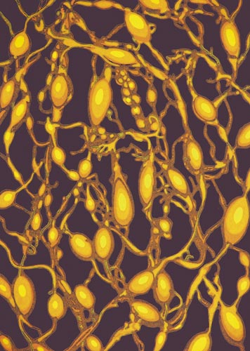

Details
Vernissage: 2. März 2007
Eröffnung: Prof. Christian Kvasnicka
Die Ausstellung war bis Ende Mai 2007 zu besichtigen.

Vernissage: 2. März 2007
Eröffnung: Prof. Christian Kvasnicka
Die Ausstellung war bis Ende Mai 2007 zu besichtigen.